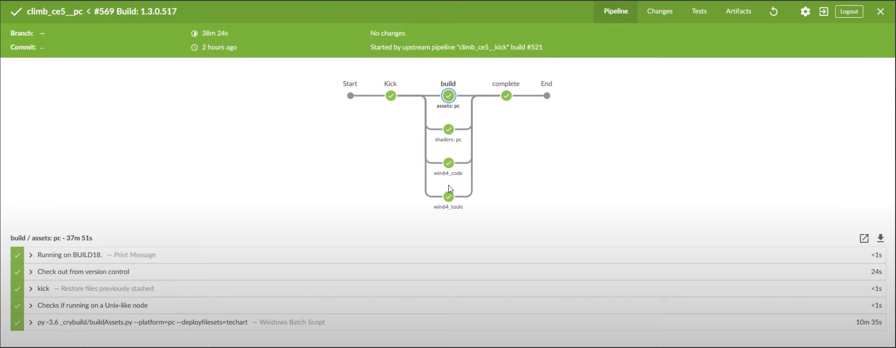

PAK файлов
Файлы PAK — это сжатые архивные файлы, очень похожие на архивные файлы .zip. Формат файла PAK используется для сжатия больших файлов или томов файлов в одну архивную папку.; это упрощает распространение файлов или загрузку файлов из Интернета.
Например, если у вас есть пятнадцать разных файлов, которые вы хотите отправить кому-то, вы можете отправить их в файловом архиве PAK, а не отправлять файлы по электронной почте в виде пятнадцати разных вложений.
Формат файла PAK обычно используется для видеоигр, таких как компьютерные игровые приложения Quake и Half-Life. Эти архивы игровых файлов содержат графику, звуки, объекты, текстуры и другие детали игры, необходимые для запуска игры на компьютере.
Преимущества
- Первоначальная загрузка сборок в формате PAK происходит относительно быстрее.
- Все (необходимые) активы доступны в одном месте.
- Получается полностью рабочий проект (проекты также могут быть помечены как "не рабочие", "стабильные" и т.п.).
Недостатки
- Может быть сложно определить, какие файлы присутствуют внутри файла PAK, а также выполнить копирование/вставку, переименование и т. д.
- Нелегко отправить файлы PAK в систему контроля версий.
Работа с файлами PAK
Crytek использует комбинацию скриптов Python. работает с нашей системой непрерывной интеграции (CI) с Компилятор ресурсов для создания файлов PAK. Это позволяет нам легко управлять содержимым и конфигурацией файла PAK с помощью файла XML.
- Чтобы сгенерировать файлы PAK, вам необходимо запустить компилятор ресурсов (Инструменты/rc/rc.exe в вашем проекте CRYENGINE) и передайте несколько аргументов.
- Пример файла конфигурации XML: game_assets.xml (../Инструменты/CryVersionSelector/rc_jobs/game_assets.xml), который определяет активы и способ их упаковки.
Вот пример скрипта Python, buildAssets.py, который содержит несколько аргументов и служит первым шагом в создании ресурсов и создании файла PAK:
py -3.6 _crybuild/buildAssets.py --platform=pc --deploytempdir2p4 --deployresults2p4 --deployfilesets=templates,cryprojectДалее реальный образец из rc.exe командная строка, где:
- Первый переданный аргумент — это путь к компилятору ресурсов;
-
/jobаргумент передает файл XML для конфигурации; /srcи/trgукажите источник исходных ресурсов и место назначения упакованных ресурсов соответственно, а затем укажите другие аргументы для конфигурации.
Command line:
"Tools\rc\rc"
"/threads=processors"
"/p=pc"
"/game=GameSDK"
"/job=_crybuild\project\gamesdk\rcjob_game.xml"
"/engine=Engine"
"/l10n=localization"
"/src=D:\jk\workspace\gamesdk_main"
"/trg=D:\jk\workspace\gamesdk_main\gamesdk_pc_rc_out"
"/pak_root=D:\jk\workspace\gamesdk_main\gamesdk_pc_pak_out"
"/logprefix=_logs\gamesdk_rcjob_game_asset_"
"/verbose=0"
"/SkipEditorMetaData=0"
"/TargetHasEditor=1"И наконец пример строить функция из исходного кода, которая:
- Вызывает компилятор ресурсов;
- Проверяет систему контроля версий и синхронизирует код;
- Проверяет, используете ли вы CMake или WAF в качестве системы сборки, вызывая соответствующий скрипт для запуска сборки;
- Упаковывает цели «код» и «актив» и запускает необходимые сценарии для включения их в правильные каталоги.
#python 3
from task.config import cfg
from task import args, bootstrap, cmake, easyanticheat, io, meta, p4, pakencrypt, rc, samba2, tbd, waf
def build(self):
if cfg.buildrc:
if cfg.jk_vcs == 'p4':
bootstrap.force_run()
if cfg.rc_buildsystem == 'cmake':
cmake.run_script('win_x64_rc')
elif cfg.rc_buildsystem == 'waf':
waf.configure(cfg.waf_parameters)
waf.build(target='win64', project_spec='resource_compiler', compilemode=cfg.rc_compilemode,
waf_parameters=cfg.waf_parameters)
else:
log.info('Unsupported buildsystem')
for target in rc.get_targets('code', 'asset'):
rctask = rc.RC(platform=cfg.platform, project=target['project'], gamedir=target['gamedir'],
jobfile=target['jobfile'], pc_has_editor=cfg.rc_pc_has_editor, branch=target['branch'])
if cfg.rc_trace_assets and rctask.branch == 'asset':
tbd.trace_assets(gamedir=target['gamedir'])
rctask.compile_resources()
if rctask.branch == 'code':
pakencrypt.run(io.join(rctask.pak_dir, 'Engine'))
if rctask.branch == 'asset':
pakencrypt.run(io.join(rctask.pak_dir, rctask.game_dir))
pakencrypt.run(io.join(rctask.pak_dir, rctask.localization_dir))
if cfg.easyanticheat_generate_catalogue:
easyanticheat.generate()
Как создать игру CRYENGINE?
Рекомендуется ознакомиться со следующими страницами, чтобы научиться разрабатывать и компилировать собственные проекты в коде:
На следующей диаграмме показан конвейер сборки Jenkins, используемый для The Climb:

Восхождение
Основными этапами этого конвейера являются:
- Удар: Конфигурация проекта;
- Сборка: Разделен на четыре подэтапа для создания ресурсов, шейдеров и кода для целевой системы (в этом примере PC);
- Завершить: Здесь мы проверяем, все ли было скомпилировано правильно, прежде чем они будут загружены в правильное место в сети.
Типы сборки
В Crytek мы работаем со следующими типами сборок:
- Местное развитие
Сборки локальной разработки обычно используются при разработке функций, чтобы убедиться, что текущая реализация работает.
Они упрощают рабочий процесс для разработчиков, которым приходится компилировать и запускать код без использования системы CI, обычно для тестов или целей проверки; это делается с помощью инструментов интегрированной среды разработки (IDE) или интерфейса командной строки (CLI) на компьютере разработчика или на удаленном компьютере, который не является распределенной системой. - Отладка/сборка профиля
Сборки отладки/профиля — это более медленные сборки с символами, которые помогают разработчику выявлять ошибки, при необходимости прикреплять точки останова, выполнять отладку на PC или консоли, анализировать производительность и лучше понимать, что происходит в коде. Обычно это рассматривается как сборка производительности/надежности. Выпуск сборки
Сборка Release — это полнофункциональный двоичный файл, готовый к распространению. Он не содержит символов и информации об отладке или точках останова, но может включать в себя запутывание, шифрование и даже сжатие.Сборки релизов являются надежным показателем производительности; поскольку они зависят от оптимизированных настроек, т. е. определенных настроек/конфигурации, вы можете получить оптимизированную сборку, которая будет работать на целевой платформе с максимально возможной производительностью.
Посмотреть это документация от Microsoft об оптимизации для лучшего понимания этой темы.[Дополнительно] Пробные сборки
При каждой отправке кода в нашу систему контроля версий (VCS) мы запускаем «облегченную» сборку, чтобы проверить, все ли работает должным образом, и убедиться, что изменение кода не привело к появлению новых проблем.- [Дополнительно] Ночные сборки
Полная сборка нашего движка и/или игры, работающая ночью. Он активно используется нашей командой QA для проверки текущего статуса продукта.
Автоматизация
Одна из главных причин автоматизировать процесс сборки и развертывания — ускорить рабочий процесс разработки и уменьшить количество возможных сбоев. Ниже приведены некоторые рекомендации для вашей среды, чтобы иметь работоспособную систему сборки:
- Используйте систему CI, например Jenkins.
- Как можно больше занимайтесь разработкой через тестирование (TDD) и запускайте тесты параллельно со своими сборками.
- Используйте свой CI для развертывания игры.
- Иметь разработку, сцену и производственную среду.
- Если есть возможность, используйте облачные сервисы; при необходимости разместите свою инфраструктуру.
- Контейнеры хороши; спросите свою команду DevOps.
- Избегайте Python 2.x и используйте Python 3.x. Это хороший язык для автоматизации, который мы используем в нашем производственном процессе.
Примеры кода
Ниже вы можете найти простой пример кода нашего конвейера, который можно использовать в качестве справочного материала.
- конвейер.groovy скрипт является отправной точкой задания CI:
def jk
stage('Kick') {
node("master") {
checkout scm
workspace = pwd()
jk = load "${YOUR_WORKSPACE}@script/jk.groovy"
}
node('BUILD18') {
jk.WS = 'climb_ce5__pc'
jk.notify_recipients = 'build_team@YourCompanyEmail'
jk.kick('project', 'project_pipeline_name')
}
}
stage('build') {
def build_steps = [:]
build_steps["win64_code"] = {
node('BUILD_MACHINE_NAME') {
jk.runjob("../build_script.py --build_step=build_binary --platform=pc --target=win64 --cleantempdir")
}
}
build_steps["win64_tools"] = {
node('BUILD_MACHINE_NAME') {
jk.runjob("../build_script.py --build_step=build_binary --platform=pc --target=win_x64 --cleantempdir")
}
}
build_steps["assets: pc"] = {
node('BUILD_MACHINE_NAME') {
jk.runjob("../build_script.py --build_step=build_assets --platform=pc --deployfilesets=techart")
}
}
build_steps["shaders: pc"] = {
node('BUILD_MACHINE_NAME') {
jk.runjob("../build_script.py --build_step=build_shadercache --platform=pc")
}
}
parallel build_steps
}
stage('complete') {
node('BUILD_MACHINE_NAME') {
jk.complete_build('pc', false)
}
}- jk.groovy скрипт содержит общие функции, которые вы можете загрузить в другие скрипты:
def notify(message, subj_result) {
// notify slack, mattermost channel
// email notification
}
def run_python(script) {
if (isUnix()) {
return sh(script: "python3.6 ${script}")
} else {
return bat(script: "py -3.6 ${script}")
}
}
def runjob(script, notify_on_success = false) {
timeout(time: 120, activity: true, unit: 'MINUTES') {
echo "Running on ${NODE_NAME}."
update()
dir("../${YOUR_WORKSPACE}")
{
unstash "kick"
try {
run_python(script)
} catch (Exception e) {
notify("Command failed: '${script}': ${e}", "failure")
throw e
}
}
if (notify_on_success) {
notify("<font color=green>Success:</font> '${script}'", "success")
}
}
}- В следующем скрипте Python у нас есть сложная логика, необходимая для наших сборок.
#! python3
# your imports, check that
from task import args, bootstrap, cmake, fileset, io, meta, msbuild, p4, samba2, symbols, tbd
from task.config import cfg
from task.job import CodeJob
class BinariesJob():
"""
Base class for project compilation.
To add a new build system, subclass BinariesJob and override those methods that deal directly with the new system.
"""
pass
class CmakeJob():
"""
Compile projects using CMake.
This launches a python script in Tools/build_meta/jenkins with the same name as the target.
The output directories are configured in the project's filebook.yaml under 'binaries_<target>'.
"""
pass
class MSBuildJob():
"""
Compile projects using MSBuild/XBuild as appropriate.
This calls MSBuild/XBuild directly.
Output directories are registered in the project's filebook.json under 'binaries_msbuild_<target>'.
"""
pass
class BuildStep()
"""
Run the step requested into your pipeline.groovy file.
Get the step from the config and run specific code.
Eg.: shaders, assets, win64_code, win64_tools
"""
pass
if __name__ == '__main__':
log = tbd.get_logger(__file__)
parser = args.ArgumentParser(description='Build Binaries.')
parser.add_argument('--build_step',
action='',
default='',
help='the step you want to execute the build')
parser.add_argument('--platform',
action='',
default='pc',
help='')
parser.add_argument('--target',
action='',
default='',
help='')
parser.add_argument('--deployfilesets',
action='',
default='',
help='')
parser.add_argument('--cleantempdir',
action='store_true',
default=False,
help='Clean temp directory.')
parser.add_argument('--nocleantargetdir',
dest='cleantargetdir',
action='store_false',
default=True,
help='Clean target directory.')
args = args.Args(parser=parser)
if not cfg.scriptname:
cfg.scriptname = cfg.target
jobs = dict(cmake=CmakeJob, msbuild=MSBuildJob)
job = jobs[cfg.buildsystem](cfg)
job.exec()Также в этом примере jk.groovy и build_script.py импортируются в конвейер.groovy сценарий и используется там.